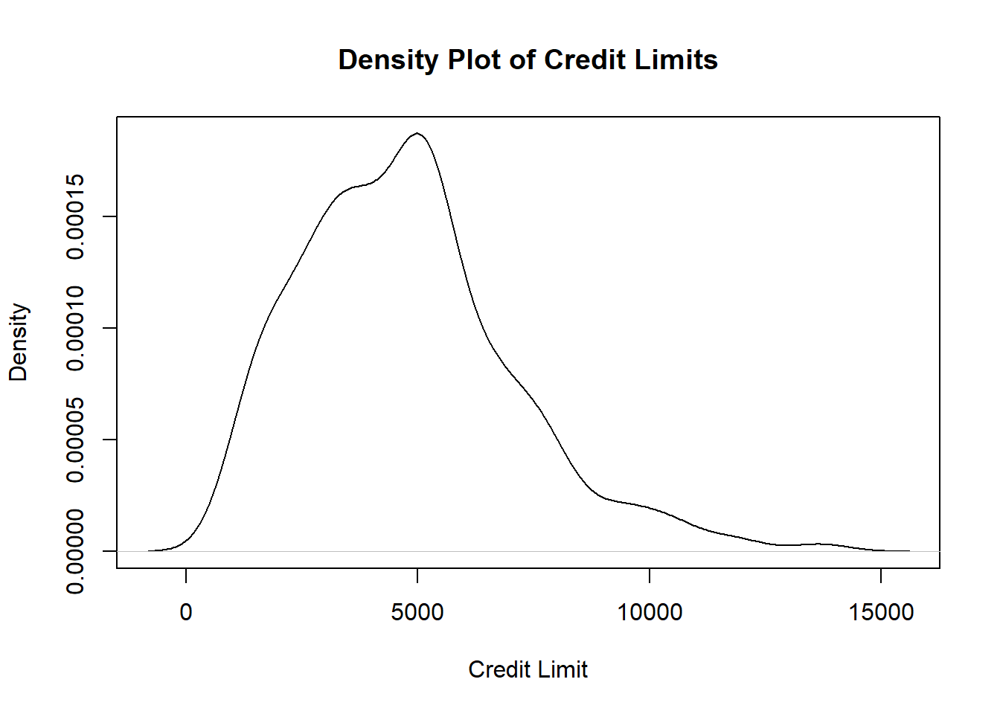

13 The Bootstrap
13.1 Introduction
In Section 12, we learned about confidence intervals for
- the mean,
- the proportion,
- the difference in two independent means, and
- the difference in two independent proportions.
These intervals are based on their known sampling distributions, which usually require some conditions to be met. Confidence intervals for any other parameter that are based on known sampling distributions work similarly. We work out the confidence interval of an estimator by using the framework in equation (12.2): we add and subtract the margin of error to and from the point estimate. The margin of error is the critical value multiplied by the standard error of the estimator. The critical value is based on the sampling distribution of the estimator. This framework requires us to know the sampling distribution and the standard error of the estimator.
This naturally leads to a question: what if the conditions for these sampling distributions are not met, or if the estimator we are working on has no known sampling distribution? In this section, we will learn about the bootstrap, which is used when the sampling distribution of an estimator is unknown.
13.2 The Bootstrap
There are estimators whose sampling distributions are unknown, for example, the sample median. How can we construct confidence intervals for the median?
One idea could be to collect many random samples, compute the sample median from each sample, and create a density plot like we did in Monte Carlo simulations in Figures 11.2, 11.3, and 11.4. However, this is not feasible in real life as we rarely have the time and money to go around obtaining many random samples. We are only able to work with the one random sample that we have.
A method to work around these issues is the bootstrap. The bootstrap will enable us to:
Estimate the standard error and variance of estimators if there are no known formulas for them.
Construct confidence intervals for estimators with unknown sampling distributions and unknown formulas for their standard errors.
We can do these without having to collect data from many random samples. Before going into how the bootstrap works, we remind ourselves of how Monte Carlo simulations work in terms of finding the sampling distribution and standard errors of estimators.
13.2.1 Estimating Sampling Distributions Using Many Random Samples
When using Monte Carlo simulations to estimate the sampling distribution of estimators (see the code that generated Figures 11.2, 11.3, and 11.4 as examples), we typically did the following:
Assume the data follow some known distribution with PDF \(f_X\).
Simulate \(n\) data points from this assumed distribution \(K\) times, with \(K\) being large, to obtain \(K\) replicate datasets of size \(n\) denoted by \(\mathcal{X}^{1}, \cdots, \mathcal{X}^{K}\).
For each dataset, calculate the value of the estimator \(\hat{\Theta}\). Since we have \(K\) datasets, we will have \(K\) values for the estimators, denoted by \(\hat{\Theta}^{1}, \cdots, \hat{\Theta}^{K}\).
We estimate the true mean of \(\hat{\Theta}\) by taking the sample mean of \(\hat{\Theta}^{1}, \cdots, \hat{\Theta}^{K}\).
We estimate the true variance of \(\hat{\Theta}\) by taking the sample variance of \(\hat{\Theta}^{1}, \cdots, \hat{\Theta}^{K}\). Square-rooting this value gives an estimate for the standard error of \(\hat{\Theta}\).
We create a density plot of \(\hat{\Theta}^{1}, \cdots, \hat{\Theta}^{K}\) to estimate the sampling distribution of \(\hat{\Theta}\).
As written earlier, the problem with applying this idea to an estimator that has an unknown sampling distribution is that we do not know its associated PDF \(f_X\). So we cannot carry out the steps listed. What the bootstrap does is to mimic these steps, when we only have access to data from one random sample. Next, we describe the steps that are carried out in the bootstrap. Pay attention to the similarities and differences in these steps with the steps above.
13.2.2 The Bootstrap Algorithm
Instead of simulating \(K\) replicate datasets from an assumed distribution, we simulate \(K\) replicate datasets by sampling, with replacement, \(n\) data points from the original dataset. The “with replacement” term is key: it means that when a data point is sampled, it is returned to the original dataset and it can be sampled again.
Let \(\mathcal{X}\) denote the original dataset with \(n\) observations. Let \(\hat{\theta}\) denote the value of the estimator from the original dataset.
Synthesize \(K\) bootstrapped datasets \(\mathcal{Y}^{(1)}, \cdots, \mathcal{Y}^{(K)}\) where each bootstrapped dataset is derived by sampling \(n\) data points from the original dataset, with replacement.
For each dataset, calculate the value of the estimator \(\hat{\Theta}\). Since we have \(K\) bootstrapped datasets, we will have \(K\) values for the estimators, denoted by \(\hat{\Theta}^{(1)}, \cdots, \hat{\Theta}^{(K)}\).
We estimate the expected value of \(\hat{\Theta}\) by taking the sample mean of \(\hat{\Theta}^{(1)}, \cdots, \hat{\Theta}^{(K)}\). This value is denoted by \(M_b(\hat{\Theta})\).
We estimate the true variance of \(\hat{\Theta}\) by taking the sample variance of \(\hat{\Theta}^{(1)}, \cdots, \hat{\Theta}^{(K)}\). This value is denoted by \(V_b(\hat{\Theta})\), which we call the bootstrap variance of the estimator. Square-rooting \(V_b(\hat{\Theta})\) gives an estimate for the standard error of \(\hat{\Theta}\), denoted by \(SE_b(\Theta)\). If \(K\) is large enough, \(V_b(\hat{\Theta})\) will approximate the true variance of the estimator.
We can create a density plot of \(\hat{\Theta}^{(1)}, \cdots, \hat{\Theta}^{(K)}\) to estimate the sampling distribution of \(\hat{\Theta}\). If \(K\) is large enough, this density plot will approximate the true PDF \(f_X\) well.
Comparing this algorithm with Monte Carlo simulations, the main differences are:
With the bootstrap, we do not assume any distribution for the original data. With Monte Carlo simulations, we do make an assumption on the distribution for the original data.
The \(K\) datasets are produced slightly differently. For the bootstrap, they are synthesized by sampling with replacement \(n\) data points from the original dataset of size \(n\). With Monte Carlo simulations, we draw \(n\) data points from its assumed distribution.
The math that proves the bootstrap works is beyond the level of this class, although it is freely available online.
The bootstrap tends to work better as the number of bootstrap datasets ,\(K\), increases and as the sample size, \(n\), increases.
13.2.3 Confidence Intervals using the Bootstrap
The basic (or reverse percentile ) bootstrap \((1-\alpha) \times 100\%\) confidence interval for \(\theta\) is
\[\begin{equation} \left( \hat{\theta} - \hat{\delta}_{1-\alpha/2}^*, \hat{\theta} - \hat{\delta}_{\alpha/2}^* \right), \tag{13.1} \end{equation}\]
where \(\delta^* = (\hat{\Theta}^{(1)}, \cdots, \hat{\Theta}^{(K)}) - \hat{\theta}\), which is the difference between the estimator in the \(K\) bootstrap samples and the value of the estimator in the original dataset, so \(\hat{\delta}_{\beta}^*\) is the \(\beta \times 100\)th percentile of \(\delta^*\).
You may notice that the confidence interval in equation (13.1) does not fit the general framework given in equation (12.2). This is because the sampling distribution of the estimator may not be symmetric.
The math that derives this confidence interval is beyond the level of this class, although it is freely available online.
The bootstrap confidence interval tends to work better as \(K\) increases and as \(n\) increases.
Note: there are variations of the confidence interval based on the bootstrap. We will use the basic bootstrap confidence interval as specified in equation (13.1).
13.2.4 Worked Example
We have data on 400 credit card customers. A density plot of their credit limits is shown below:
library(ISLR2)
Data<-ISLR2::Credit$Limit
plot(density(Data), xlab="Credit Limit", main="Density Plot of Credit Limits")
Figure 13.1: Density Plot of Credit Limits
The density plot in Figure 13.1 informs us that the values of credit limits are skewed, so the median is a better measure of centrality for credit limits. We wish to estimate the population median credit limit, give a measure of uncertainty, as well as report a 95% confidence interval for the median credit limit. Since the sampling distribution of the sample median is unknown, we use the bootstrap:
##actual sample median
samp_median <- median(Data)
samp_median## [1] 4622.5
K<-1000 ##Number of bootstrap samples
set.seed(77)
##the sample function, with replace=TRUE, samples with replacement.
##The replicate function repeats the sample function K times
##if no size is specified in sample(), default is the length of the vector called Data
boot.samples<-replicate(K,sample(Data, replace=TRUE))
##Each column in boot.samples represents each bootstrap sample
##find the sample median of each column, since each column represents a bootstrap sample
boot.medians<-apply(boot.samples,2,median)
##bootstrap SE of the median is just the SD of the sample medians from each bootstrap sample
sd(boot.medians)## [1] 152.0525
##deltas
boot_median_error <- boot.medians- samp_median
##sort deltas
boot_median_error_sort <- sort(boot_median_error)
##find CI based on equation
alpha<-0.05
p1 <- K*(alpha/2)
p2 <- K*(1 - alpha/2)
samp_median - boot_median_error_sort[c(p2,p1)]## [1] 4380.0 4949.5We report the following:
- The sample median is $4622.5.
- The standard error of the sample median is $152.0525.
- The 95% confidence interval for the median credit limit is (4380.000, 4949.5). There is 95% probability that the true population median credit limit lies in the random interval between $4380 and $4949.50.
13.3 Parametric Vs Non-Parametric Methods
The confidence intervals from Section ?? are based on the known sampling distributions of estimators, and have a closed form formula to calculate them. These confidence intervals are typically based on some conditions in order to be valid.
Such methods are sometimes called parametric methods, as the distributions they are based on fits a known probability distribution which can be specified by an equation via its PDF, \(f_X\).
The bootstrap, on the other hand, does not assume a known probability distribution. Therefore, the bootstrap is considered a non-parametric method, as the associated probability distribution is unknown and not associated with an equation like a PDF. Non-parametric methods tend to be more versatile, in the sense that they are based on less assumptions or conditions, and so can be applied in a wider variety of settings.
The only assumptions / conditions associated with the bootstrap are:
- The sample has to be representative of the population (similar to parametric methods).
- The underlying population does not have very heavy tails.